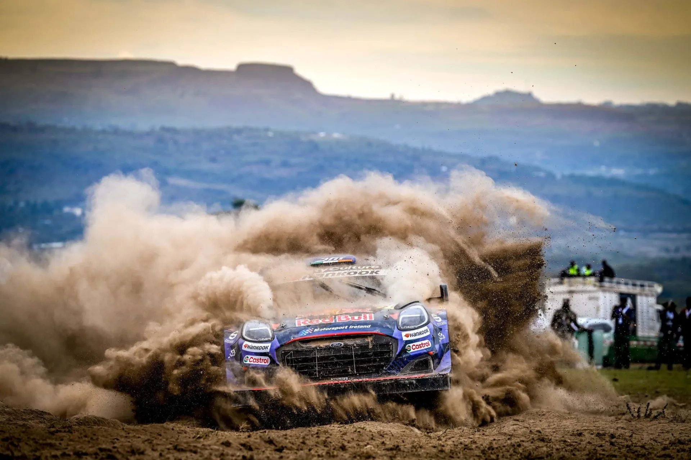
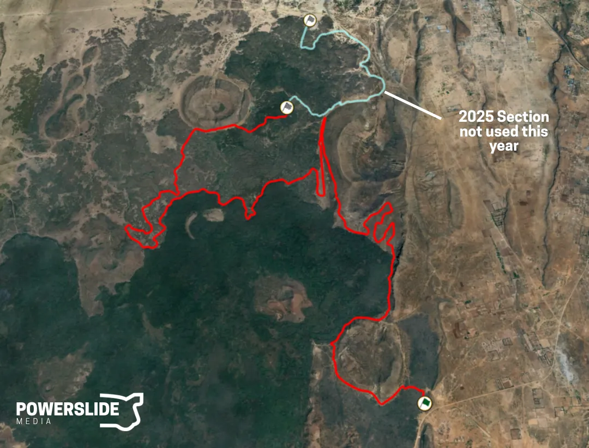
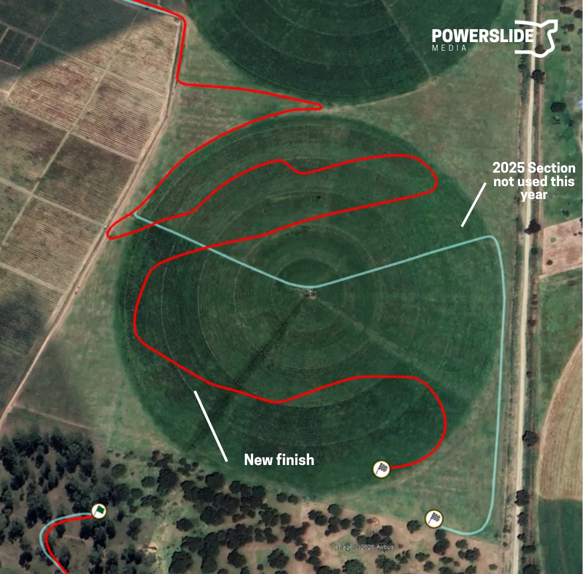
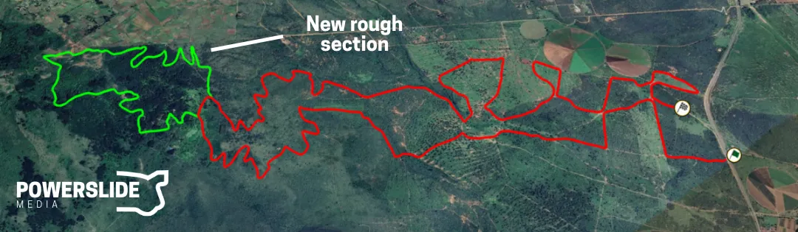
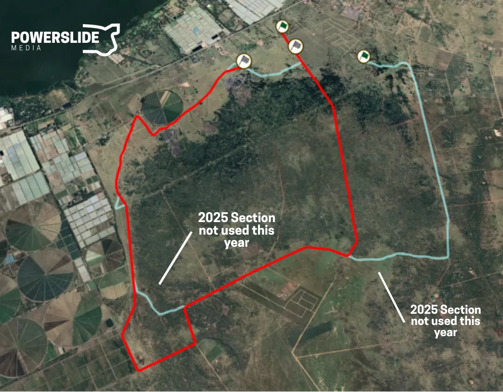
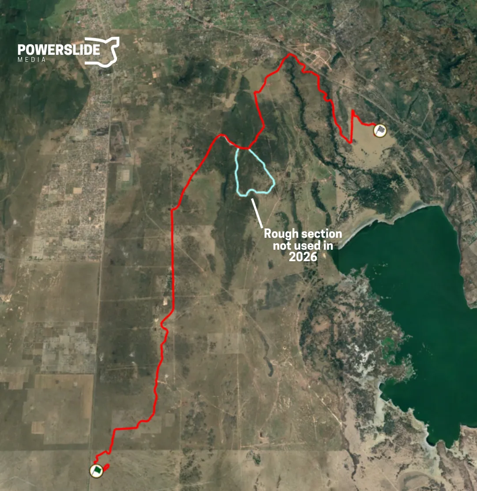
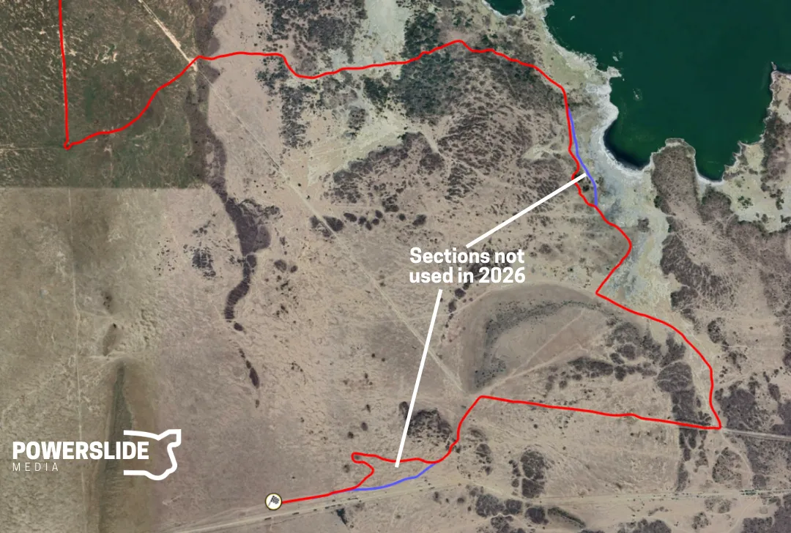
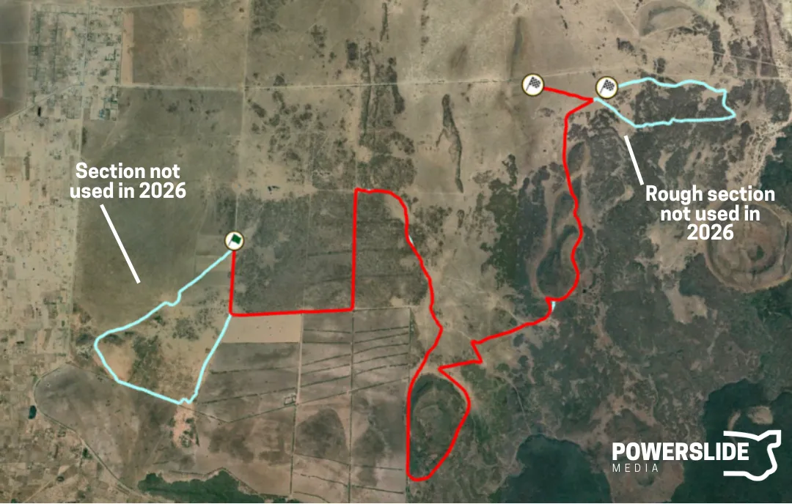

Safari Rally Kenya 2026: Stage Preview
Thumbnail: @ World
Maps adapted from: Dimitri Dusart
The WRC's only round in Africa sees a revamped, shortened itinerary for 2026. In order to shave off some lengthy liasion sections, the Ceremonial Start in Nairobi has been dropped, as has the twin-car SSS in Kasarani. The rally now starts on Thursday, with a brand new Shakedown in Naivasha.
Most of the rally's stages have been shortened, including Sleeping Warrior. At 350.84km this is the shortest edition of the event since 2021.
Thursday
The event kicks off on Thursday with the pre-event Shakedown, as well as two proper stages. Camp Moran which was used on Friday last year, is the rally's opening test, with Mzabibu remaining as the rally's second stage. Both of these stages will each be used once on Friday.
Shakedown: Nawisa - 6.31km
Changes compared to past editions: Brand new stage, held across the street from the rally's Service Park in Naivasha.
Stage description: Held very close to the rally's base, the new Shakedown first climbs uphill on a medium-wide road, which is bumpy and sandy. At 1.47km, the stage enters a quarry, with a rocky backdrop, reminiscent of Saudi Arabia.
After exiting the quarry, the rest of the stage is a mix of high-speed sections with some tight corners also.
After exiting the quarry, the stage becomes rougher, on a very narrow and bumpy road at 2.35km, before continuing on a wider one after a junction. The rest of the stage varies in roughness, with some faster sections as it heads downhill.
Street View images from the start of the Shakedown
SS1/3: Camp Moran - 24.50km
Changes compared to past editions: Compared to last year the stage has been shortened by roughly five kilometers from the end.

Camp Moran (red) compared to last year's edition (light blue)
Stage description: Camp Moran was a new stage for 2025, and used sections previously used as part of the Sleeping Warrior test. Last year it was one of the roughest stages of the event, and also saw Oliver Solberg stuck in the fesh-fesh on the second pass.
The start is on a very narrow and rough trail, with many holes and bumps. The stage changes between very high-speed and rough twisty sections as it makes its way round the mountain, eventually becoming rocky and very rough.
Following a sinuous section and another very rough sequence, there's a long straight, which is still very narrow, with dips and crests. After a tight hairpin another straight follows, this time on a smoother and sandy surface.
The next part of the stage is very very very rough and rocky. It is slow and sinuous, with constant elevation changes and dips and bumps everywhere.
At 21.3km the road becomes sandy and smoother, with a faster section ensuing. The end of the stage is on a slightly wider road, and is twisty.
SS2/10: Mzabibu - 8.86km
Changes compared to past editions: Similar to last year's stage, with a new finish.

The new finish of Mzabibu (red) compared to last year's edition (light blue)
Stage description: Mzabibu was a new stage last year. Takamoto Katsuta had an off track excursion here, narrowingly missing some farming equipment. The stage is located in the Morendat Farm vineyards, with its first 4.3km being on mostly narrow and sinuous trails, passing next to short trees and bushes. The section from 2.4km to 2.9km was exceptionally muddy last year, featuring big puddles.
Following that, there is a high-speed section on a very narrow road with grass lines in the middle, which is then followed by a rough and slow one at 5.9km. The end of the stage is on more grass filled roads, used to service nearby fields, as well as crop circles themselves, which are quite rough in places.
It features the only new section for this year, which more sinuous, with long corners, compared to 2025.
Friday
Friday sees two loops of four stages each. After a second pass of Camp Moran, the crews will tackle the same stages as last year, ie Loldia, Geothermal and Kedong. The afternoon loop will see the stage order reversed, with Mzabibu closing out the day. At 136km, this is the longest day of the rally.
SS4/9 Loldia - 25.60km
Changes compared to past editions: An extended version of last year's Loldia stage, which is now the longest of the rally.

The new section (green) compared to last year's stage (red)
Stage description: The stage is an extended version of last year's Loldia stage, which is now the longest of the rally. The first part is a mix of straights and junctions using different roads of varying width. From 3.75km to 8km, the stage is sinuous, slow and rough, on a very narrow uphill road. It then continues onto a new section, which is still rough and sinuous, with many rocky sections, deep in the forest. The stage reaches the altitude of 2600m 11.27km, and then continues downhill.
It becomes faster after that, with the road also becoming wider after a junction at 17.2km, with the rest of the stage being similar to what it was like at the start, with fast/medium speed sections joined together by junctions, changing from wide to narrow at different points.
Gregoire Munster broke his suspension here last year, as did Thierry Neuville from the lead in 2021.
SS5/8 Geothermal - 13.12km
Changes compared to past editions: The same as last year's Geothermal stage.
Stage description: The stage starts off in a bumpy and narrow road, before turning onto a wider, smoother one. At 1.69km, there’s a series of 3 crests, after which it becomes more technical momentarily, with a series of medium speed corners.
Some very rough patches appear at about 4 km, with the stage becoming rougher and narrower at about 5.2km, for a bit less than 1 kilometer, after which it smoothens out.
At 7.88km, the stage turns to a wide and smoother road, with many cambered turns. This part of the stage is more reminiscent of Rally Mexico or the Acropolis Rally than the Safari. The last 700m are uphill, on a steep and medium wide road.
Onboard of the 2024 Geothermal test
SS6/7 Kedong - 13.79km
Changes compared to past editions: Run with a new section at the start, as well as a new deviation in the middle. In total, more than half of the stage is new for this year. Since last year it no longer has any resemblance to the Kedong stage that was full of fesh-fesh sections.

Kedong (red) compared to last year's edition (light blue)
Stage description: The start of the stage is very high-speed, on a narrow road, with a chicane also at 2.3km.
The stage starts with a long straight on a narrow road. After 800m, the road becomes very rough and features rocky sections with dips and bumps, as well as some more high-speed passages.
It joins the route of the 2025 test at 4km via a junction, and continues onto a long, bumpy straight, which has the big Miti Mbili jump, as well as other crests following that.
Following that, there's a section of straights and junctions on some new roads, with the test joining the 2025 route again at 9km. Another very long straight follows, on a more hard-packed surface, as well as a high-speed section, which leads to tight hairpin at 11.5km. Following a small technical sequence, the stage reaches its finish after another flat-out section.
Last year this was by far the fastest stage of the rally, with an average speed of 123km/h!
Saturday
Saturday features two loops of three stages, which are run in reverse order compared to 2025. Soysambu and Elmenteita are in run in the reverse direction, with Sleeping Warrior further shortened to just 18km for this year's rally.
The stages are generally on open areas, characterised by narrow roads with grass lines in the middle, with high-speed sections and junctions.
SS11/14 Soysambu - 25.20km
Changes compared to past editions: Reversed and used in a similar configuration to the 2024 edition. It sees a rocky and rough section removed.

Soysambu (red) compared to last year's edition (light blue)
Stage description: The start of the stage is in an open area, and is on narrow roads, with grass lines down the middle. After a sinuous section, the stage continues onto a series of high-speed sections, featuring long straights, junctions and long corners, with the road becoming wider. At 7km, there's a very long straight, which lasts for almost three kilometers!
Another high-speed section follows, with the road becoming very rough and bumpy momentarily as the stage enters the forest at 12.15km. The stage enters another forested section at 17.6km with a potential watersplash, and becomes slower and more technical.
Upon exiting that section, it again becomes high-speed, featuring a fesh-fesh section at 19.5km, and rougher short segments as it re-enters the forest sporadically.
The stage finishes on a slow and sinuous road for the final 1.5km after a big straight at 22.3km.
In 2022, Gus Greensmith rolled out of the event here, and in 2024, Gregoire Munster broke the suspension of his Puma Rally1 on this stage.
SS12/15 Elmenteita - 17.80km
Changes compared to past editions: Used in a reverse direction compared to last year while also having a few new sections, with new roads ploughed.

The new roads in Elmenteita (red) compared to last year's stage (dark blue)
Stage description: The beginning of the test is again in an open area, and features high-speed sections on narrow roads, with grass growing in the middle. There's a very long straight at 3.37km, which is very bumpy.
Following that straight, there's another high-speed section, with many bumps and small junctions, with the stage becoming very rough at 8.4km, and remaining so in places.
After a junction at 10km, the stage becomes smoother as it passes next to the Elmenteita Lake, but then becomes rough and sinuous, entering a forested section at 12km.
Upon exiting the forest, the stage is again a mix of high-speed sections and junctions, this time slightly wider, with many dips and bumps.
SS13/16 Sleeping Warrior - 18.49km
Changes compared to past editions: Compared to 2025 the stage has seen some sections near the start removed, with the rough finish also omitted from this year's version.

This year's Sleeping Warrior (red) compared to last year's version (light blue)
Stage description: Perhaps the most anticipated stage of the event, Sleeping Warrior is the most iconic of the stages that make up the modern Safari Rally Kenya. The test takes its name from the mountain the route of the test drives around of, which bears a resemblance to a Maasai warrior laying on his back
The new start features a long straight, after which the stage joins last year's route. Two more long straights follow, and a junction leads the crews to a rougher section. These sections, depending on the weather, can be full of water and mud!
At 8.3km there's a very fast but rough section, in a forested area, with dips and bumps. After a hairpin at 12.3km, the stage is again on open roads. The last section of the stage being generally fast with many flowing corners.
Sunday
Sunday is the shortest day of the rally, featuring 2 repeated stages, which are in an identical configuration to 2025.
SS17/19 Oserengoni - 18.33km
Changes compared to past editions: Identical to last year's version of the stage.
Stage description: The first 2km are on a very narrow, bumpy and technical road in the forest. The stage leaves that road via a junction, and proceeds onto a faster one, outside the forest.
A massive straight follows at 4km that lasts almost 2 kilometers, before the cars turn onto another fast section. The next part is technical, with the road becoming narrower and generally slow and sinuous, but again with the odd straight occasionally.
The stage becomes faster, with a fast section at 12.4km, with a massive straight following at 13.52km. A very rough section follows until about the 17km mark, before the stage again has a big straight, with a junction leading the cars to the finish.
SS18/20 Hell's Gate - 23.45km
Changes compared to past editions: Identical to last year's edition.
Stage description: The stage is on a medium wide road in its entirety, and it’s one of the fastest of the rally. The section from 5 to 7km is quite tricky, as we saw big rocks being pulled into the racing line in previous editions. The last few kilometers are on an open and sandy road, with a tricky junction just before the finish. Takamoto Katsuta rolled here in 2025.
Onboard of the 2021 Hell's Gate test
What I would change
If I could make some small changes to the itinerary, it would be these: I would move Kedong to Sunday, to partner with Hell's Gate. I would also like to see Chui Lodge from 2021 return, maybe in place of Oserengoni, on Friday. I would also like to see Sleeping Warrior in its un-shortened version, or maybe even a combination that finishes on the 2025 shakedown.


Comments